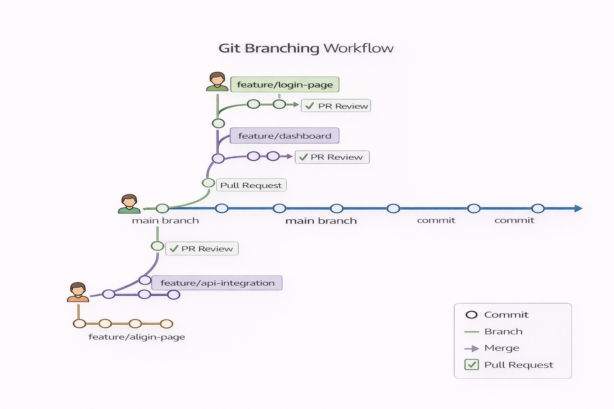

📖 Detailed Explanation
In modern software development using Agile methodologies with DevOps practices, developers work in sprints where continuous testing and integration happen throughout the day. When a developer makes code changes, those changes go through an automated pipeline that ensures quality and readiness for deployment.
The workflow starts with developers writing code on their local machines. They use Git for version control, creating snapshots of their work through commits. Once code is ready, it's pushed to a feature branch in GitHub (or GitLab, Bitbucket, AWS CodeCommit). From there, a Pull Request (PR) is created to merge changes into the main branch.
When code reaches the main branch or when a PR is created, the CI/CD pipeline automatically triggers. This automation catches bugs early, prevents broken code from reaching production, and ensures consistent quality across all changes.
🔑 Key Concepts
- Version Control (Git): Tracks all code changes and maintains history of modifications
- Local Repository (.git): Stores version snapshots on developer's machine
- Remote Repository (GitHub): Central location for code storage and collaboration
- Feature Branch: Isolated branch where developers work on specific features
- Main Branch: Primary branch containing production-ready code
- Pull Request (PR): Request to merge feature branch code into main branch
- Webhooks: Automated triggers that start CI/CD pipelines when code changes
- CI Pipeline: Automated process that builds, tests, and validates code
📊 Visual Architecture

Figure 1: Complete CI/CD Workflow from Development to Deployment
🔄 CI Pipeline Stages
The Continuous Integration (CI) pipeline executes automatically when code is pushed or a PR is created:
| Stage | Purpose | Tools Used |
|---|---|---|
| Checkout | Retrieve code from repository | Git, Webhooks |
| Build/Compile | Convert source code to executable format | Maven (Java), NPM (Node.js), PIP (Python) |
| Static Code Analysis | Analyze code without running it for bugs and security issues | SonarQube, Checkstyle |
| Unit Testing | Test small code units/functions | JUnit (Java), PyTest (Python) |
| Code Coverage | Measure how much code is tested | JaCoCo (Java), Coverage.py (Python), Istanbul (JavaScript) |
| Package | Create final deployable artifact | Maven, NPM, Docker |
🛠️ Git Workflow Commands
Setting Up Git:
# Initialize Git in project directory
git init
# Configure Git credentials
git config --global user.name "Your Name"
git config --global user.email "your.email@example.com"Creating Version Snapshots:
# Stage files for commit
git add filename.py
# Create version snapshot
git commit -m "Added login feature"
# Push to remote repository
git push origin feature-branchCollaboration Commands:
# Clone repository to local machine
git clone https://github.com/username/repo.git
# Pull latest changes
git pull origin main
# Create and switch to new branch
git checkout -b feature-login-page⚙️ CI/CD Tools
| Category | Tools | Purpose |
|---|---|---|
| Source Code Management | GitHub, GitLab, Bitbucket, AWS CodeCommit | Store and manage code repositories |
| CI/CD Orchestration | Jenkins, GitHub Actions, GitLab CI, AWS CodeBuild, CircleCI | Automate build, test, and deployment processes |
| Build Tools | Maven, Gradle, NPM, PIP | Compile code and manage dependencies |
| Testing | JUnit, PyTest, Selenium | Automated testing of code functionality |
| Code Quality | SonarQube, Checkstyle | Static analysis and quality checks |
✅ Best Practices
| Practice | Why It Matters | How to Implement |
|---|---|---|
| Use feature branches | Isolates work and prevents conflicts in main branch | Create new branch for each feature: git checkout -b feature-name |
| Write meaningful commit messages | Makes code history understandable and trackable | Use descriptive messages: "Fixed login authentication bug" not "fix" |
| Commit frequently | Creates smaller, manageable changesets easier to review | Commit after completing each logical unit of work |
| Pull before push | Prevents merge conflicts and integration issues | Always git pull before git push to sync with latest changes |
| Use Pull Requests for code review | Ensures code quality through peer validation | Never push directly to main; always create PR for review |
| Automate CI pipeline triggers | Catches bugs immediately after code changes | Configure webhooks to trigger CI on every push/PR |
📊 Visual Architecture

Figure 2: Git Branching Strategy and Pull Request Workflow